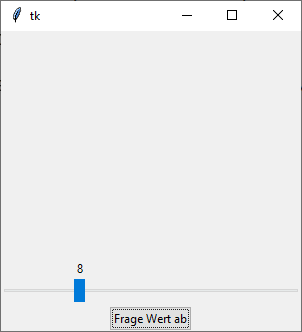

ttk.LabeledScale
ttk.LabeledScale ist eine tkinter-Erweiterung, dieses Widget ist nicht in den originalen ttk-Widgets enthalten. Sie besteht aus einem Label und einem Scale, kombiniert in einem Frame.
ttk.LabeledScale erzeugen
ls = ttk.LabeledScale(parent, Optionen)
| Optionsname | Beschreibung |
|---|---|
| variable | siehe Kontrollvariablen.
Der value-Parameter der IntVar(value) kann nicht mit einem Wert vorbelegt werden, da der
Konstruktor diesen mit from_ überschreibt. |
| from_ | Minimaler Wert |
| to | Maximaler Wert |
ttk.LabeledScale kennt die Optionen des ttk.Frame.
Per value-Property lassen sich Werte setzen und abfragen. Das enthaltene Label bekommt
man mit ls.label, das Scale mit ls.scale.
Das folgende Programm stellt ein LabeledScale vor:
import tkinter as tk
from tkinter import ttk
class A(tk.Tk):
def __init__(self):
super().__init__()
self.geometry("300x300")
self._createWidgets()
def _createWidgets(self):
self.ivar = tk.IntVar()
self.ls = ttk.LabeledScale(self, variable=self.ivar, from_=4, to=20);
self.ls.pack(expand=tk.YES, fill=tk.BOTH, padx=2, pady=2)
self.ls.value = 15
ttk.Button(self, text='Frage Wert ab', command=self._onGetValue).pack()
def _onGetValue(self):
print(self.ivar.get(), self.ls.value)
if __name__ == '__main__':
window = A()
window.mainloop()